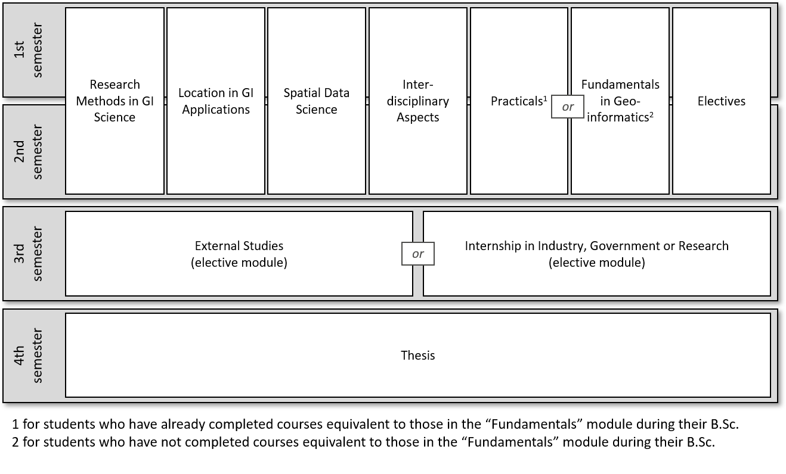
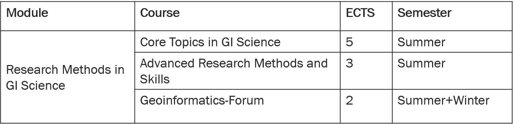
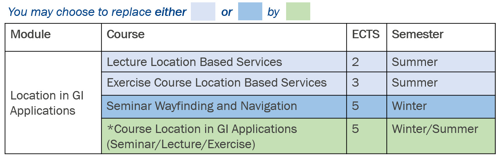
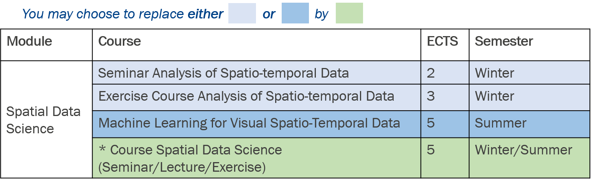
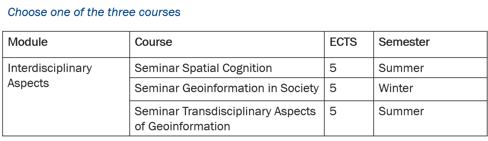
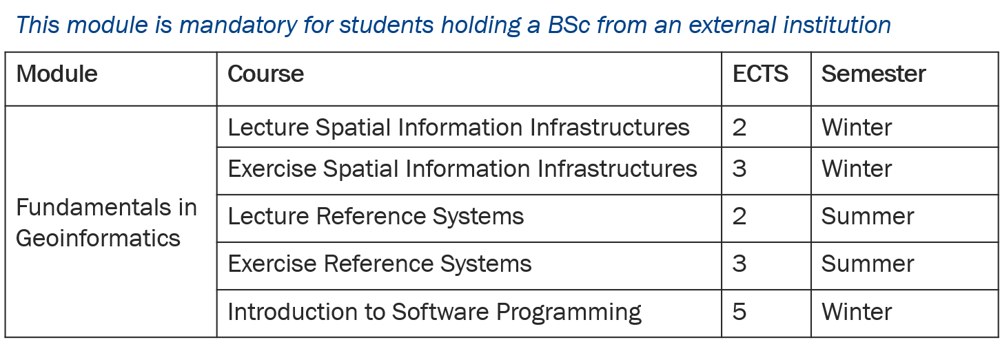
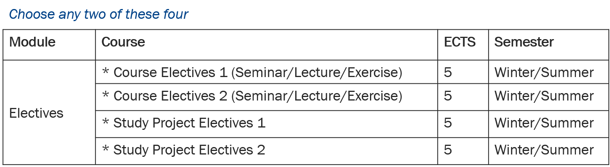
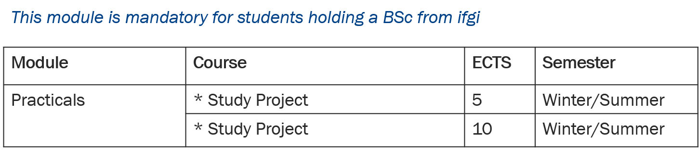

Module structure
The total workload of the study program is 120 credit points (ECTS) distributed over 8 modules and 4 semesters. The third semester is reserved for doing an external semester (e.g., study abroad or conduct an internship) and in the fourth semester you will complete and defend your Master thesis. This means that the actual course program (lectures, seminars, study projects etc.) is completed in the first two semesters. Each semester is intended to contain ~30 ECTS, in total you will receive:
- 60 ECTS for courses (1st and 2nd semester)
- 30 ECTS for your external semester (3rd semester)
- 30 ECTS for writing and defending your Master thesis (4th semester)
This document explains how to choose courses in the first two semesters in order to collect the required 60 ECTS of coursework.

Note: Your course program in semester 1 and 2 consists of elective and mandatory courses. Most of these mandatory courses are only offered once a year. If you miss such a course, the next chance will be one year later, when you are supposed to do your external semester. This means that you have to choose mandatory courses in the semester when they are first offered to you, otherwise you risk a delay in your studies.
1 Research Methods in GI Science
Module 1 consists of 3 courses with a total of 10 ECTS, all of which are mandatory. The figure below shows an overview of the courses of this module.

Specifics:
The “GI-Forum” is a colloquium where ifgi invites scientists from other Universities or research institutions to give talks about their research. To receive the 2 ECTS for this course you have to attend these talks throughout the 1st and 2nd semester.
2 Location in GI Applications
Module 2 consists of 2 courses with a total of 10 ECTS and involves some choices for students (see Specifics). The figure below shows an overview of the courses of this module.

Specifics:
The courses “Location Based Services” and “Wayfinding and Navigation” are the default courses to attend within this module. However, you can choose to replace one of these two courses (either “Location Based Services” or “Wayfinding and Navigation” ) by an eligible (thematically fitting) elective course from our course program (called “Course Location in GI Applications” in the figure above). The offering of elective courses varies from semester to semester, and courses that are eligible as an elective for this module will be shown in the corresponding course overview of the module in the course booking system.
The course “Location Based Services” is a combined lecture and exercise. You have to attend both in the same semester. This is why it is treated as one 5 ECTS course.
3 Spatial Data Science
Module 3 consists of 2 courses with a total of 10 ECTS and involves some choices for students (see Specifics). The figure below shows an overview of the courses of this module. Its structure is identical to the one of module 2. The figure below shows an overview of the courses of this module.

Specifics:
The courses “Analysis of Spatio-temporal Data” and “Machine Learning for Visual Spatio-Temporal Data” are the default courses to attend within this module. However, you can choose to replace one of these two courses (either “Analysis of Spatio-temporal Data” or “Machine Learning for Visual Spatio-Temporal Data” ) by an eligible (thematically fitting) elective course from our course program (called “Course Spatial Data Science” in the figure above). The offering of elective courses varies from semester to semester, and courses that are eligible as an elective for this module will be shown in the corresponding course overview of the module in the course booking system.
The course “Analysis of Spatio-temporal Data” is a combined seminar and exercise. You have to attend both in the same semester. This is why it is treated as one 5 ECTS course.
4 Interdisciplinary Aspects
Module 4 consists of 1 course with a total of 5 ECTS that can be chosen out of three courses (see Specifics). The figure below shows an overview of the courses of this module.

Specifics:
There are three courses eligible for this module: “Spatial Cognition”, “Geoinformation in Society” and “Transdiciplinary Aspects of Geoinformation”. You chose one of these 3 courses to complete this module.
5 Fundamentals in Geoinformatics
Module 5 consists of 3 courses with a total of 15 ECTS. The figure below shows an overview of the courses of this module.

Specifics:
- This module is mandatory for students who have not already attended equivalent courses. This is typically the case for students who did their Bachelor´s degree at an institution other than ifgi. If you did your Bachelor´s degree at an institution other than ifgi but you already attended courses equivalent to one or more of the courses in this module, you may replace those courses with elective courses from our course program. Please contact the study advisors to discuss with them whether or not this is possible.
- The courses “Spatial Information Infrastructures” and “Reference Systems” are each a combined lecture and exercise. You have to attend the lecture and exercise in the same semester (winter semester for “Spatial Information Infrastructures” and summer semester for “Reference Systems”, respectively). This is why each of them is treated as one 5 ECTS course.
6 Electives
Module 6 consists of 2 courses with a total of 10 ECTS, both of which are elective courses. The figure below shows an overview of the courses of this module.

Specifics:
You can choose any combination of study projects and other courses from the course program to complete this module (one study project and one non-project course, two study projects, or two non-project courses). The offering of elective courses varies from semester to semester, and courses that are eligible as an elective for this module will be shown in the corresponding course overview of the module in the course booking system (see course booking system).
If you are not studying module 7, you have to choose at least one study project in this module.
7 Practicals
Module 7 consists of 2 courses (study projects, also called project courses) with a total of 15 ECTS. Both study projects are mandatory, but the topics can be chosen from the course program. The figure below shows an overview of the courses of this module.

Specifics:
This module is mandatory for students who have already attended courses equivalent to those in module 5 (see above). This is the case for students who did their Bachelor´s degree at ifgi.
Study projects are offered every semester. The specific topics of the projects usually change every semester, as they are closely aligned with the current research in our labs. Thus, each topic is usually offered only once.